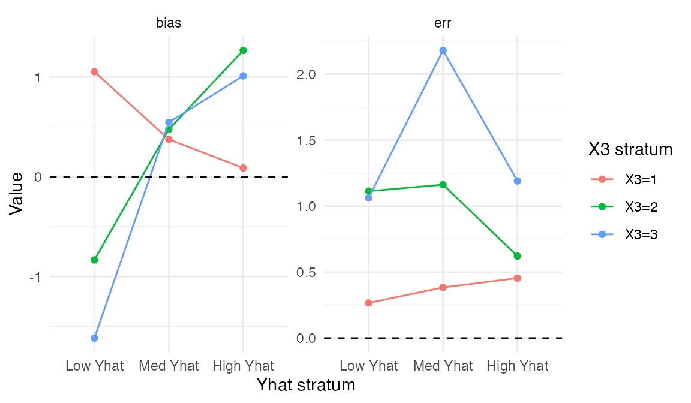
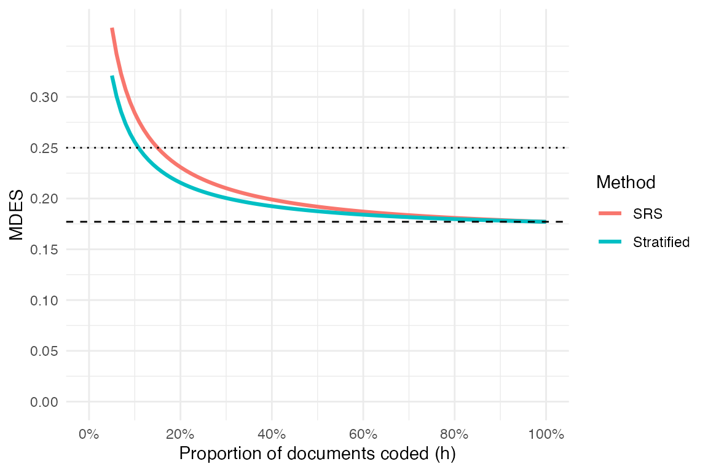

Many studies now use a surrogate outcome, such as a machine-coded or AI-generated score, when the outcome of interest is expensive to obtain. The surrogate may be available for every unit, but it is not the actual outcome. If the surrogate is systematically off, estimates based on it alone can also be off.
Mozer and Miratrix (2025) describe one way to use a human-coded subsample to correct this bias. The researcher codes a random subset of units, compares the human-coded outcomes to the surrogate outcomes in that subset, and uses the observed differences to adjust the full-sample surrogate estimate. Mozer, Pashley, and Miratrix (2026) extend this idea by asking which units should be selected for human coding. When surrogate errors vary across observable groups, stratified sampling can reduce uncertainty by making the human-coded sample more informative.
The workflow below has four parts:
Install the package from GitHub, then load it:
# install.packages("devtools")
devtools::install_github("lmiratrix/stratsampling")
library(stratsampling)The example uses the package’s built-in toy dataset. The workflow has five steps: load data, choose a stratification, draw a sample, merge the coded outcomes, and estimate the treatment effect.
Suppose you have data from an RCT with a machine-coded surrogate
outcome (Yhat) for every unit. The true outcome is
expensive to obtain, so it will only be observed for a human-coded
subsample. The dataset also contains baseline covariates and a treatment
indicator:
data( toy_data )
head( toy_data )
#> # A tibble: 6 × 6
#> ID X1 X2 X3 Tx Yhat
#> <int> <dbl> <int> <dbl> <dbl> <dbl>
#> 1 1 0.85 1 2 0 1.79
#> 2 2 -0.9 1 3 0 8.44
#> 3 3 0.16 1 3 0 -0.531
#> 4 4 0.12 1 3 0 0.861
#> 5 5 -0.57 1 3 0 -2.69
#> 6 6 0.19 1 3 0 -1.16The toy_data dataset contains 1000 observations with
three baseline covariates (X1, X2,
X3), a surrogate prediction (Yhat), treatment
assignment (Tx), and a unique identifier (ID).
X3 is known to be highly predictive of the actual
outcome.
The first design choice is how to stratify the population. The
create_stratification_candidates() function generates
candidate stratifications based on different variables and numbers of
strata:
candidates <- create_stratification_candidates( toy_data,
vars = c("Yhat", "X1", "X2", "X3"),
Z = "Tx" )
length( candidates )
#> [1] 33Each candidate is a factor vector assigning every observation to a
stratum. To compare candidates before coding, use
compare_stratifications_precoding(). This ranks the
candidates using proxy metrics based only on the surrogate outcome and
observed covariates:
comparison_precoding <- compare_stratifications_precoding( toy_data,
candidates,
Z = "Tx" )
head( comparison_precoding )
#> # A tibble: 6 × 9
#> stratification n_strata min_stratum_size max_stratum_size avg_size_ratio
#> <chr> <int> <int> <int> <dbl>
#> 1 Yhat_quintiles 5 51 149 2.78
#> 2 Yhat_quartiles 4 69 181 2.50
#> 3 Yhat_X2_3x3 9 12 110 8.21
#> 4 Yhat_X1_3x3 9 29 81 2.62
#> 5 Yhat_X3_3x3 9 25 82 2.91
#> 6 Yhat_X2_3x2 6 15 172 6.56
#> # ℹ 4 more variables: mean_spread <dbl>, avg_within_var_Yhat <dbl>,
#> # sd_within_var_Yhat <dbl>, total_var_Yhat <dbl>The table orders candidates by these pre-coding metrics. Here, we use
a 3-by-3 interaction stratification because X3 was
constructed to be predictive of surrogate accuracy.
The make_interaction_strata() function creates such
stratifications directly:
toy_data$strata <- make_interaction_strata( x1 = toy_data$Yhat,
n1 = 3,
var_name1 = "Yhat",
x2 = toy_data$X3,
n2 = 3,
var_name2 = "X3",
z_vec = toy_data$Tx)
# This is equivalent to pulling from the candidate library:
alt_strat <- candidates[[ 'Yhat_X3_3x3' ]]
all.equal( toy_data$strata, alt_strat )
#> [1] TRUEWith the stratification fixed, draw the human-coded sample using
generate_sample_index(). By default, the function samples
proportionally within strata:
toy_data$sample <- generate_sample_index( toy_data, 100,
Z = "Tx", strata = "strata",
seed = 4044 )
table( toy_data$strata, toy_data$sample )
#>
#> 0 1
#> Low Yhat / X3=1 94 10
#> Med Yhat / X3=1 104 12
#> High Yhat / X3=1 102 12
#> Low Yhat / X3=2 96 10
#> Med Yhat / X3=2 109 13
#> High Yhat / X3=2 94 11
#> Low Yhat / X3=3 112 12
#> Med Yhat / X3=3 86 9
#> High Yhat / X3=3 103 11The table shows that each of the 9 strata contributes roughly 10% of its documents to the coded sample.
To create a coding sheet for human coders:
After coding, merge the human-coded outcomes back into the full dataset:
data( "toy_data_coded" )
head( toy_data_coded )
#> # A tibble: 6 × 2
#> ID Yobs
#> <int> <dbl>
#> 1 57 -0.891
#> 2 59 1.41
#> 3 64 -2.18
#> 4 66 -3.58
#> 5 73 -0.752
#> 6 78 0.417
full_data <- toy_data %>%
left_join( toy_data_coded, by = "ID" )
# Verify all targeted documents were coded
table( sampled=full_data$sample, has_outcome = !is.na( full_data$Yobs ) )
#> has_outcome
#> sampled FALSE TRUE
#> 0 900 0
#> 1 0 100The next table summarizes surrogate bias and residual error within each stratum:
sum_stat <- full_data %>%
group_by( strata ) %>%
summarise( n = n(),
n_code = sum(sample),
mean_Yhat = mean( Yhat ),
mean_Y = mean( Yobs, na.rm=TRUE ),
bias = mean_Yhat - mean_Y,
err = sd( Yobs - Yhat, na.rm=TRUE ) ) %>%
arrange( -mean_Yhat )
sum_stat
#> # A tibble: 9 × 7
#> strata n n_code mean_Yhat mean_Y bias err
#> <fct> <int> <dbl> <dbl> <dbl> <dbl> <dbl>
#> 1 High Yhat / X3=3 114 11 5.27 4.26 1.01 1.19
#> 2 High Yhat / X3=2 105 11 5.12 3.85 1.27 0.621
#> 3 High Yhat / X3=1 114 12 4.86 4.77 0.0876 0.454
#> 4 Med Yhat / X3=3 95 9 1.29 0.749 0.545 2.18
#> 5 Med Yhat / X3=2 122 13 1.16 0.684 0.475 1.16
#> 6 Med Yhat / X3=1 116 12 1.15 0.778 0.375 0.384
#> 7 Low Yhat / X3=2 106 10 -2.38 -1.55 -0.834 1.11
#> 8 Low Yhat / X3=1 104 10 -2.51 -3.56 1.05 0.266
#> 9 Low Yhat / X3=3 124 12 -2.63 -1.01 -1.62 1.06Because the stratification crosses Yhat and
X3, we can plot bias and residual error across
Yhat levels within each X3 group:
sum_stat_plot <- sum_stat %>%
separate( strata, into = c("Yhat_strat", "X3_strat"), sep = " / " ) %>%
mutate( Yhat_strat = factor( Yhat_strat,
levels = c( "Low Yhat", "Med Yhat", "High Yhat" ) ) ) %>%
pivot_longer( cols = c(bias, err),
names_to = "stat", values_to = "val" )
ggplot( sum_stat_plot, aes( Yhat_strat, val,
col = X3_strat, group = X3_strat ) ) +
facet_wrap( ~ stat, scales = "free_y" ) +
geom_point() +
geom_line() +
geom_hline( yintercept = 0, linetype = 2 ) +
labs( x = "Yhat stratum", y = "Value", color = "X3 stratum" ) +
theme_minimal()
When bias differs across strata, the stratified estimator corrects
those differences within strata rather than averaging them over the full
sample. The residual error panel (err) shows whether some
strata have noisier surrogate predictions than others. If that
heterogeneity is large, optimal allocation may be worth considering.
The est_ma_strat() function computes the stratified
model-assisted estimator. It combines the full-sample surrogate
predictions with within-stratum bias corrections estimated from the
coded subsample:
es <- est_ma_strat( data = full_data,
Yobs = "Yobs",
Z = "Tx",
S = "sample",
strata = "strata",
Yhat = "Yhat" )
es
#> est SE SEhat SEhat.full SEhat.samp S2.0 S2.1
#> 1 2.103955 NA 0.2855843 0.1892718 0.2138564 6.63857 11.27334The main outputs are est (the ATE estimate) and
SEhat (the estimated standard error). For comparison, we
can also compute the SRS model-assisted estimator, which ignores the
stratification:
es_srs <- est_ma_srs( data = full_data,
Yobs = "Yobs",
Z = "Tx",
S = "sample",
Yhat = "Yhat" )
es_srs
#> est SE SEhat SEhat.full SEhat.samp S2.0 S2.1
#> 1 2.082851 NA 0.3151378 0.1899984 0.2514209 6.695346 11.35435Because the sample was stratified, this SRS calculation is not the estimator we would use for inference. It is included only to show how the standard errors compare in this example.
Before collecting human-coded outcomes, it is useful to ask how much coding is needed to reach a target level of precision and how much stratification changes that calculation.
First estimate the design parameters from pilot data:
R2s <- estimate_R2( full_data, Yobs = "Yobs", Yhat = "Yhat",
Z = "Tx", strata = "strata" )
R2s
#> # A tibble: 1 × 4
#> R2_strat n K R2_ML
#> <dbl> <int> <int> <dbl>
#> 1 0.312 1000 18 0.825Then plot MDES (minimum detectable effect size) curves as a function of the coding fraction:
target_MDES <- 0.25
pp <- plot_power_curve( nrow(full_data), mean(full_data$Tx), 1,
R2_ML = R2s$R2_ML, R2_strat = R2s$R2_strat )
# Plot with target MDES line
pp +
geom_hline( yintercept = target_MDES, lty = 3 ) +
scale_y_continuous( breaks = seq(0, 0.3, by = 0.05) ) +
expand_limits( y = 0 )
The underlying values are stored as an attribute of the plot:
tbl <- attr( pp, "table" )
head( tbl )
#> # A tibble: 6 × 4
#> Method h SE MDES
#> <chr> <dbl> <dbl> <dbl>
#> 1 Stratified 0.05 0.115 0.321
#> 2 Stratified 0.06 0.107 0.301
#> 3 Stratified 0.07 0.102 0.285
#> 4 Stratified 0.08 0.0977 0.273
#> 5 Stratified 0.09 0.0942 0.264
#> 6 Stratified 0.1 0.0913 0.256Use the table to find where each curve is closest to the target MDES:
crosses <- tbl %>%
group_by( Method ) %>%
filter( abs(MDES - target_MDES) == min(abs(MDES - target_MDES)) )
crosses
#> # A tibble: 2 × 4
#> # Groups: Method [2]
#> Method h SE MDES
#> <chr> <dbl> <dbl> <dbl>
#> 1 Stratified 0.11 0.0889 0.249
#> 2 SRS 0.15 0.0892 0.250In this toy example, the stratified design reaches the target at about an 11% coding fraction.
The ratio of required sample sizes tells us how much stratification reduces the coding burden:
1 - crosses$h[[1]] / crosses$h[[2]]
#> [1] 0.2666667Here, stratification reduces the required coding effort by about 27%.
The other vignettes give more detail on simulation and stratification diagnostics:
vignette("simulation_framework") for running simulation
studies to compare sampling designs under different data-generating
processes.vignette("applied_analysis") for a detailed walkthrough
of evaluating and selecting from possible stratifications, including
oracle vs. pre-coding comparisons and optimal allocation.